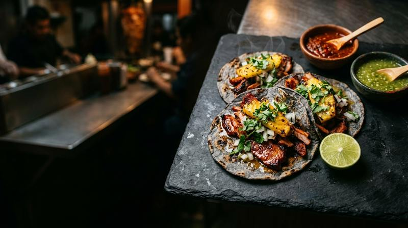
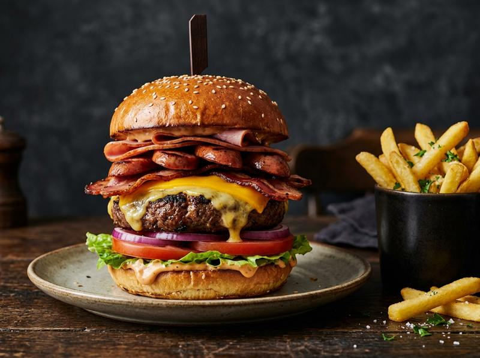

EL ANTOJO NO SE DISCUTE.
Tacos al pastor, hamburguesas mamalonas con sirloin y papas asadas bien preparadas para cuando el hambre habla en serio.

LOS FAVORITOS DEL ANTOJO
Los platillos que han construido la fama de Tacostada en la zona conurbada. Porciones generosas, sabor auténtico e ingredientes de primera calidad.
Preparar Pedido por WhatsApp
Arma tu mensaje de forma rápida y envíalo directamente al teléfono de servicio de Tacostada.
¿PREFIERES PEDIR POR APLICACIÓN?
Tacostada cuenta con presencia confirmada en las plataformas de entrega más utilizadas de la zona conurbada Tampico–Madero.
EL CONCEPTO TACOSTADA
Tacostada nació para resolver una pregunta clásica: cuando hay hambre de verdad, ¿por qué elegir entre un taco bien servido, una tostada crujiente o una hamburguesa monumental?
En nuestras sucursales de Tampico y Ciudad Madero combinamos el sazón de los clásicos taqueros del noreste mexicano con creaciones contundentes como la Hamburguesa La Mamalona y las Papas Asadas rellenas de pastor y fajita.
Carne al pastor marinada con piña y cortes suaves de res sazonados al momento.
Hamburguesas con carne de res auténtica, quesos derretidos y aderezo especial.
Papa horneada rellena con asadero, cheddar, crema y tostadas doradas.
Horchata, jamaica y pepino con limón preparados para acompañar el antojo.

SUCURSALES Y HORARIOS
Visítanos en cualquiera de nuestros puntos de venta en la zona metropolitana o comunícate vía telefónica para ordenar tu comida.